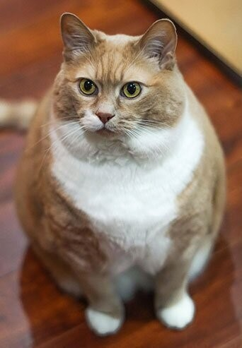
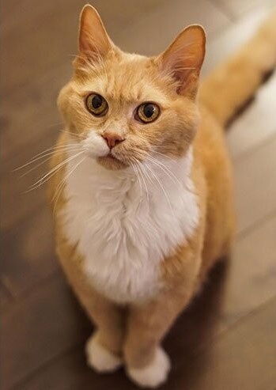

похудение
Ваш кот весит больше собаки и почти утратил способность лазить по деревьям? Пора на диету! Cat Energy Slim поможет вашему питомцу сбросить лишний вес.

набор массы
Заработать авторитет среди дворовых котов и даже собак? Серия Cat Energy Pro поможет вашему коту нарастить необходимые мышцы!
Как это работает
Функциональное питание содержит только полезные питательные вещества.


Выпускается в виде порошка, который нужно лишь залить кипятком и готово.


Замените один-два приема обычной еды на наше функциональное питание.


Уже через месяц наслаждайтесь изменениями к лучшему вашего питомца!
Живой пример
Борис сбросил 5 кг за 2 месяца, просто заменив свой обычный корм на Cat Energy Slim. Отличный результат без изнуряющих тренировок! При этом он не менял своих привычек и по-прежнему спит по 16 часов в день.
5кг
снижение веса
60 дней
затрачено времени
Затраты на питание:
15 000 РУБ.


было
стало